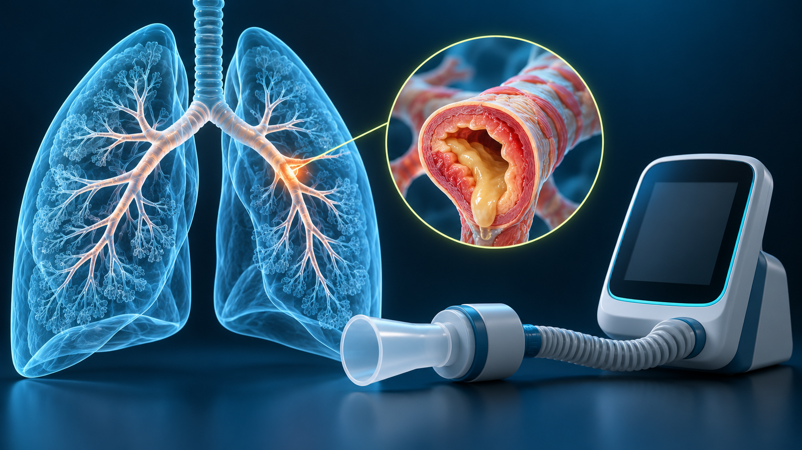

CONSULTA + TREINOBase clínica aprovada · 18/10/2026
OBSTRUÇÃO · EXACERBAÇÃO · PREVENÇÃO
DPOC.
Da evidência à ação.
GOLD 2026 em decisões curtas. Diagnóstico, tratamento inicial e resposta à exacerbação no mesmo percurso.

ANATOMIA → RACIOCÍNIO → CONDUTAVeja o mecanismo.
Lembre a próxima ação.
Lembre a próxima ação.
⚠️ Ferramenta educacional/de apoio à decisão. Não substitui o julgamento clínico, os protocolos institucionais ou a avaliação médica individual. Instabilidade exige avaliação imediata, independentemente do escore.
01
PREENCHA O ESSENCIAL
02
RESULTADO + CONTEXTO
Sua próxima ação
◎
O raciocínio começa aqui.
Preencha o formulário e confira os critérios usados. Um dado ausente nunca é considerado normal.
LEITURA EM 60 SEGUNDOS
Essenciais do protocolo
10 IMAGENS · WIDESCREEN 16:9
Veja. Conecte. Recupere.
Ilustrações conceituais geradas por IA. A informação clínica está nas legendas e fontes; as imagens não representam exames de pacientes.
Carregando o treino Turbo TEMI…
📚 Recapitulação rápida do protocolo
RASTREABILIDADE
Qual diretriz sustenta a decisão?
Atualizações verificadas em 18/10/2026. A atualização ATS de PAC é focada e complementa a diretriz ATS/IDSA de 2019. O serviço deve adaptar os esquemas à CCIH, disponibilidade e resistência local.